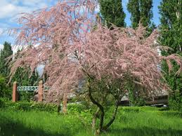

Tamaricaceae
Tamarisk Family
Tamaricaceae is a family of shrubs and small trees, often adapted to saline or arid environments (halophytes and xerophytes). They are characterized by their very small, scale-like leaves giving a feathery appearance, and numerous small, typically pink or white flowers arranged in dense spike-like racemes or panicles.
Overview
Tamaricaceae belongs to the order Caryophyllales, but sits outside the core group known for betalain pigments. This relatively small family comprises about 5 genera and 90-100 species, with the vast majority belonging to the genus Tamarix.
The family is native primarily to the Old World, particularly arid and semi-arid regions of Europe, Africa, and Asia, often inhabiting deserts, steppes, and coastal areas. Many species are highly tolerant of saline soils and drought, possessing deep root systems and specialized salt glands on their leaves to excrete excess salt. Their feathery foliage and masses of small flowers make some species ornamental, but several Tamarix species have become highly invasive, particularly in riparian areas of the southwestern United States, where they can displace native vegetation and alter hydrology.
The family is easily recognized by its distinctive scale-like leaves and dense clusters of tiny flowers.
Quick Facts
- Scientific Name: Tamaricaceae
- Common Name: Tamarisk family, Saltcedar family
- Notable Genera: Tamarix, Myricaria, Reaumuria
- Number of Species: Approximately 90-100
- Distribution: Native to Europe, Africa, Asia (arid/saline regions); widely naturalized and often invasive elsewhere (e.g., North America)
- Evolutionary Group: Eudicots - Core Eudicots - Caryophyllales
Key Characteristics
Growth Form and Habit
Members are shrubs or small trees, often with slender, arching branches giving a wispy or feathery appearance. They are typically adapted to harsh environments, exhibiting halophytic (salt-tolerant) and xerophytic (drought-tolerant) traits. Many species possess deep taproots to access groundwater. Some species can excrete salt through glands on their leaves, sometimes forming visible crusts.
Leaves
Leaves are a key identifying feature: they are very small, scale-like or needle-like (ericoid), arranged alternately, and often overlapping (imbricate) and pressed against the stem (appressed). This greatly reduces water loss. Many species possess specialized salt glands on the leaf surface.
Inflorescence
Flowers are typically borne in dense, slender, spike-like racemes or branched panicles. These inflorescences contain numerous small flowers and often appear feathery due to protruding stamens.
Flowers
Flowers are small, usually bisexual, and actinomorphic (radially symmetrical). Key floral characteristics include:
- Calyx: Composed of 4-5 distinct or basally fused sepals.
- Corolla: Composed of 4-5 distinct petals, typically pink or white, sometimes purplish.
- Androecium: Stamens number from 4-5 to many (often 4-10 in Tamarix), typically distinct. Filaments are often inserted on or below a nectar disk located at the base of the ovary.
- Gynoecium: A single superior ovary composed of 2-5 fused carpels. It has a single locule with basal or parietal placentation and contains numerous ovules. Styles are short and distinct.
Fruits and Seeds
The fruit is typically a small capsule that dehisces (splits open) longitudinally by valves. It contains numerous tiny seeds. A distinctive feature is that the seeds usually bear a tuft of hairs (coma) at one end or cover the seed, which aids in dispersal by wind (anemochory) and sometimes water.
Chemical and Physiological Features
Salt excretion via specialized glands is a notable physiological adaptation in many species. Tannins are commonly present. Unlike the core Caryophyllales families (like Cactaceae or Amaranthaceae), Tamaricaceae lacks betalain pigments and produces anthocyanins instead.
Field Identification
Identifying Tamaricaceae relies heavily on the unique vegetative features and characteristic inflorescences.
Primary Identification Features
- Shrub or Small Tree Habit: Often with a feathery appearance.
- Tiny Scale-like or Needle-like Leaves: Overlapping and appressed to stems.
- Dense Racemes/Panicles: Spike-like clusters of numerous small, pink or white flowers.
- Capsule Fruit: Small, splitting open.
- Hairy Seeds (Coma): Seeds possess tufts of hairs for wind dispersal (visible when capsule dehisces).
Secondary Identification Features
- Habitat: Often found in saline, arid, or riparian (riverbank) environments.
- Salt Excretion: Visible salt crystals may be present on leaves/stems.
- Superior Ovary: Ovary located above petals/sepals.
- Flowers 4- or 5-merous: Parts typically in 4s or 5s.
Seasonal Identification Tips
Observe throughout the year:
- Flowering Season: Typically spring and summer, when the dense pink/white flower clusters are conspicuous.
- Fruiting Season: Capsules develop after flowering. Look for the release of tiny, hairy seeds, which can occur over an extended period.
- All Seasons (Vegetative): The scale-like leaves and overall feathery habit are distinctive year-round (for evergreen species like T. aphylla) or during the growing season for deciduous species. Salt crusts may be visible anytime.
Common Confusion Points
The scale-like leaves can cause confusion:
- Conifers (e.g., Juniperus, Cupressaceae): Also have scale-like leaves, but are gymnosperms producing cones, not flowers and capsules with hairy seeds.
- Casuarinaceae (She-oaks): Have jointed, photosynthetic stems that resemble pine needles; true leaves are reduced to tiny scales in whorls at the joints. Produce small, woody cone-like structures.
- Ericaceae (Heath Family - some genera): Some heaths (e.g., Calluna, Erica) have small, appressed leaves, but their flowers (often urn-shaped) and fruit (capsule or berry) are different, and they lack hairy seeds of this type.
- Frankeniaceae: Also often halophytes with small leaves, but flowers usually solitary or in looser cymes, different ovary/placentation.
Field Guide Quick Reference
Look For:
- Shrub/small tree, feathery look
- Tiny scale-like/needle-like leaves
- Dense spike-like racemes/panicles
- Small pink/white flowers (4-5 parts)
- Capsule fruit
- Seeds with tufts of hair (coma)
Key Variations:
- Flower color (pink vs. white)
- Deciduous vs. Evergreen habit
- Stamen number (4-5 vs. more)
- Habitat (coastal, riparian, desert)
Notable Examples
The genus Tamarix dominates the family and includes several well-known, often invasive, species.

Tamarix ramosissima (and related species like T. chinensis)
Saltcedar / Tamarisk
Native to Eurasia, these deciduous shrubs or small trees are highly invasive in arid riparian areas of North America. They have tiny blue-green scale-like leaves and produce masses of small pink flowers in dense racemes during spring and summer. They consume large amounts of water and increase soil salinity.

Tamarix aphylla
Athel Tree / Athel Tamarisk
A larger, evergreen tree native to North Africa and the Middle East. It is often planted as a windbreak or shade tree in arid regions. Its scale-like leaves are grey-green, and it produces whitish flowers. It is less invasive than the deciduous saltcedars but can still escape cultivation.

Myricaria germanica
German Tamarisk
Native to gravelly riverbanks across Europe and Asia, this shrub belongs to a different genus but shares the scale-like leaves and dense racemes of pinkish flowers. Unlike Tamarix, its stamens are typically fused at the base. It is often found in montane river systems.
Phylogeny and Classification
Tamaricaceae is placed within the order Caryophyllales. However, it belongs to a lineage that diverged before the evolution of betalain pigments, which characterize the "core Caryophyllales" (like cacti and amaranths). Tamaricaceae produces anthocyanins instead.
Molecular studies place Tamaricaceae in a well-supported clade alongside the Frankeniaceae (Sea Heaths) family. This Tamaricaceae-Frankeniaceae clade is often considered sister to the Plumbaginaceae (Leadwort family), and together these families form a larger group related to the Polygonaceae (Buckwheat family) within the non-core Caryophyllales.
Position in Plant Phylogeny
- Kingdom: Plantae
- Clade: Angiosperms (Flowering plants)
- Clade: Eudicots
- Clade: Core Eudicots
- Order: Caryophyllales
- Family: Tamaricaceae
Evolutionary Significance
Tamaricaceae is significant for:
- Adaptations to Extreme Environments: Provides excellent examples of physiological and morphological adaptations (halophytism, xerophytism, salt glands, deep roots) to saline and arid conditions.
- Wind Dispersal: The evolution of comose (hairy) seeds is a highly effective strategy for wind dispersal, contributing to their colonization ability.
- Invasive Biology: Several Tamarix species are case studies in biological invasions, highlighting ecological impacts and challenges for management.
- Phylogenetic Position: Its placement within Caryophyllales outside the core group helps understand the evolution of traits like pigment types (anthocyanins vs. betalains) within the order.